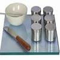
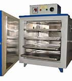
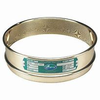

1. Flat glass plate, 10 mm thick and about 45 cm square.
2. Spatula
3. Balance, sensitive to 0.01 g
4. Thermostatically controlled oven
5. Airtight and non-corrodible containers for moisture content determination.
6. Wash bottle containing distilled water
7. 425 mircon IS sieve
8. 3 mm diameter rod of about 10 cm length.